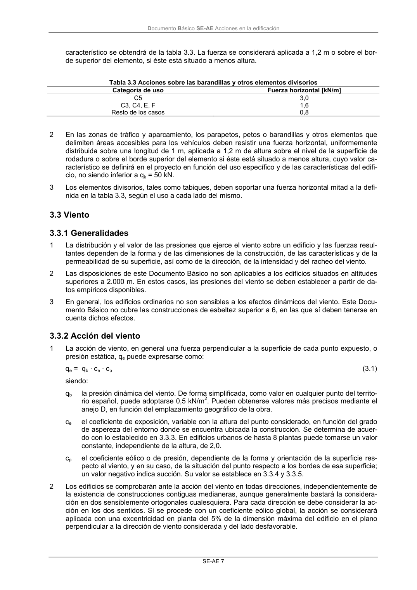

DB-SE-AE Acciones en la edificación · edición 2009-04 · capa oficial
Documento DB-SE-AE-oficial · SHA-256 del PDF 26116e5088955f0c6963a6187270cad282e1e7bf5a53a90f695c8fa50b4e4487
Copia fiel del PDF fuente · Fuente oficial
Ficha de la disposición en la fuente oficial
Formatos: JSON del segmento · Markdown
3.3.2 Acción del viento 1 La acción de viento, en general una fuerza perpendicular a la superficie de cada punto expuesto, o presión estática, qe puede expresarse como: qe = qb · ce · cp (3.1) siendo: qb la presión dinámica del viento. De forma simplificada, como valor en cualquier punto del territo- rio español, puede adoptarse 0,5 kN/m2. Pueden obtenerse valores más precisos mediante el
